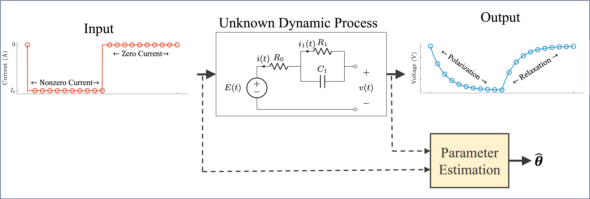
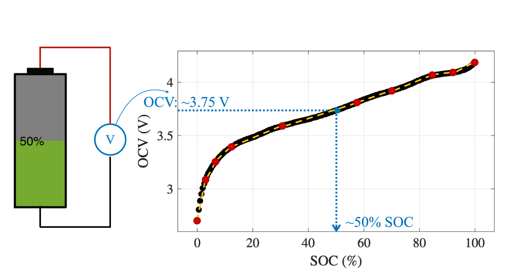

Two-Stage Least Squares for Equivalent-Circuit Model Parameter Estimation of Li-Ion Batteries Using Pulse-Relaxation Excitation
A linear estimation approach to estimate battery equivalent-circuit parameters.

A linear estimation approach to estimate battery equivalent-circuit parameters.

A SOC-OCV lookup table optimization approach for resource-constrained BMS.

You can find a complete record of my research on the following platforms: